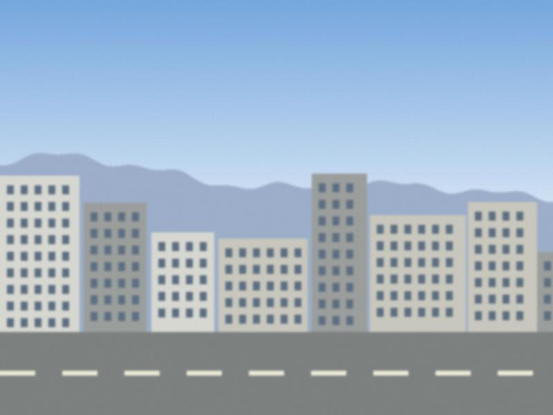

grandfather's Zenit. old city, saturday. i learned to measure the light with my hand.36 frames, 29 came out. the man at the photo shop said: "you're improving." he said it like he was disappointed.

grandfather's Zenit. old city, saturday. i learned to measure the light with my hand.36 frames, 29 came out. the man at the photo shop said: "you're improving." he said it like he was disappointed.
128 notes
29 out of 36! My father got 4 out of 24 in 1986 and called it a vernissage.
Comments are closed.